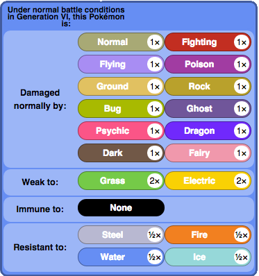
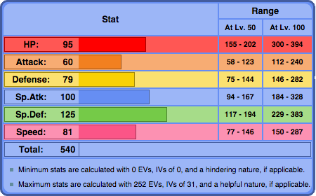
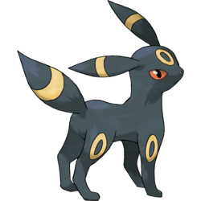
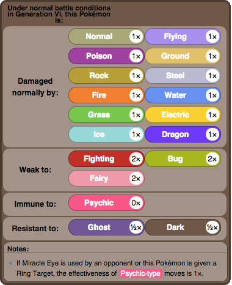
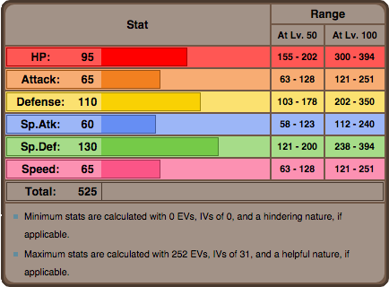
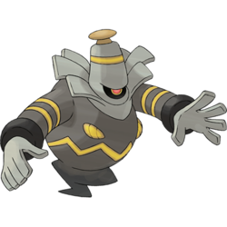
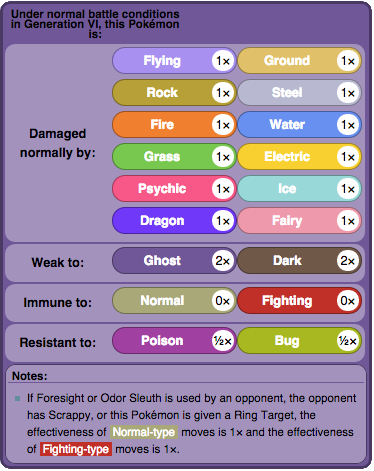
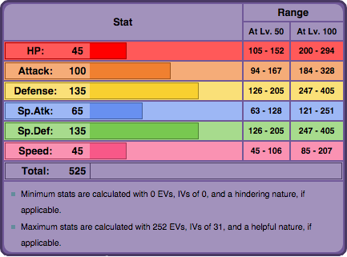

Defense Walls
Milotic

Milotic can be a very effective wall because of its high HP and Sp. Defense, along with a strong Defense. IVs should exclude Attack, and EVs should be invest fully in HP, and scattered around Defense, Sp. Defense, and Sp. Attack. The ability Marvel Scale is recommended, especially if Rest/Sleep Talk is ran, since it can buff Milotic's defense. The item should be Leftovers to recover health, and the nature should be Clam or Bold.
 | Move 1: Scald | Move 2: Ice Beam |
| Move 3: Recover/Rest | Move 4: Toxic/Sleep Talk |
Umbreon
Umbreon is another popular option because of its very high defenses and HP. Umbreon should be invested in HP and Sp. Defense for the ultimate defense, and a little bit in Defense. The defense can be raised by Curse. Leftovers is probably the best option as well to regain health. IVs should only lack Sp. Attack, and Careful should be its nature, but Impish can work as well.
 | Move 1: Payback | Move 2: Curse |
| Move 3: Moonlight | Move 4: Toxic/Heal Bell/Confuse Ray |
Dusknoir
Dusknoir's role is very similar to Umbreon's. It has high Defense and Sp. Defense, but also has reliable Attack Stat. Dusknoir's Ability should be Pressure to subtlely burn away opponent's PP, and its item is Leftovers. EVs should be spread throughout HP, Defense, Sp Defense, and Attack, and the nature can be Impish or Careful.
 | Move 1: Night Shade/Shadow Punch | Move 2: Protect/Earthquake |
| Move 3: Will-O-Wisp/Toxic | Move 4: Pain Split |